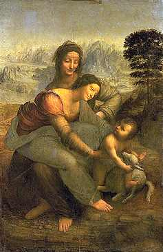

Leonardo di ser Piero da Vinci, llamado Léonard da Vinci
1452-1519
La Virgen, el Niño Jesús y santa Ana
Hacia 1510
Tabla A 1,68 m; L 1,30 m
INV 776
Bastante poco frecuente, el tema de la Virgen sentada en el regazo de santa Ana remonta a la Edad Media. La ejecución del cuadro de Milán, hacia 1510, es resultado de una larga meditación, como lo atestiguan los dibujos y cartones (el único cartón conservado está en Londres). El artista nunca acabará completamente su panel y lo guardará consigo hasta su muerte. Pintado de una manera fina y transparente, que deja aparecer en algunos lugares el boceto subyacente, constituye la conclusión de las investigaciones sobre perspectiva aérea, codificadas por Leonardo en el bosquejo de su "Tratado de Pintura".
ATRAS